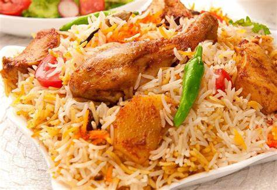
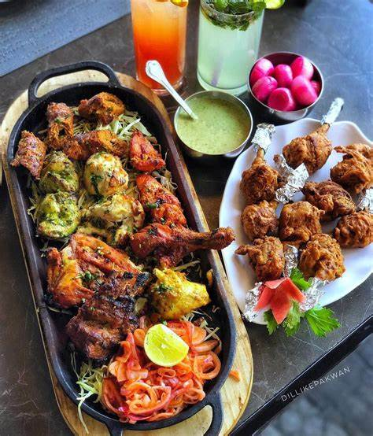

We are open 7 days a week!
varites of foods
Non-Vegetarian Recipes- There are some of us for whom a good meal almost always means a meaty affair. With so many varied kinds of non-vegetarian dishes, one is sure to be bowled over with lip-smacking flavours. Look within the Indian sub-continent and you have unique preparations using local regions of the region.

There are some of us for whom a good meal almost always means a meaty affair. With so many varied kinds of non-vegetarian dishes, one is sure to be bowled over with lip-smacking flavours. Look within the Indian sub-continent and you have unique preparations using local regions of the region.

Non-Vegetarian Recipes- There are some of us for whom a good meal almost always means a meaty affair. With so many varied kinds of non-vegetarian dishes, one is sure to be bowled over with lip-smacking flavours. Look within the Indian sub-continent and you have unique preparations using local regions of the region.
Back To Top